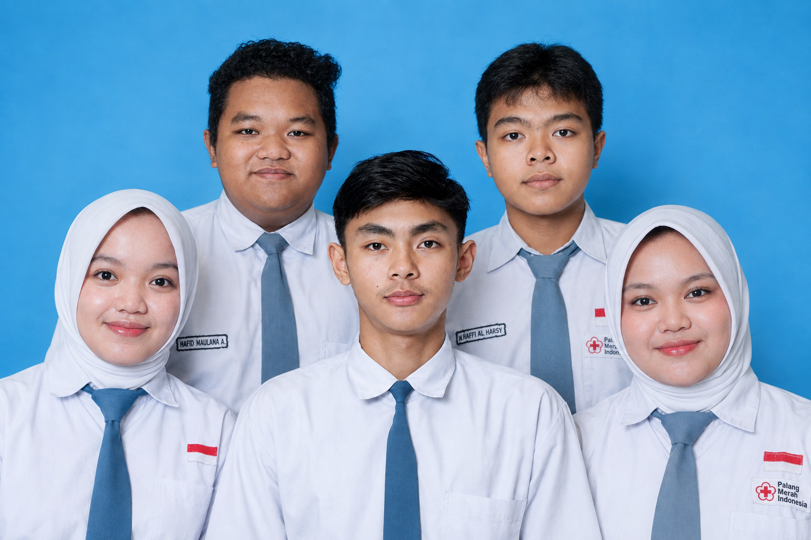

OUR TEAM
Berkarya Bersama,
Menciptakan Sesuatu yang Berarti.
KELOMPOK PEJUANG CUAN
Sebuah kelompok yang terdiri dari lima individu dengan ide, kemampuan, dan karakter yang berbeda, yang bekerja bersama untuk menghasilkan sebuah karya digital.
GROUP / 2026
01—05

Five minds.
One journey.
5 PEOPLE
1 CREATION
1 CREATION
COLLABORATE
CREATE
CREATE
WHO WE ARE
Tentang Kelompok Kami
Kami dibentuk untuk menggabungkan kemampuan, ide, dan sudut pandang yang berbeda menjadi satu karya. Setiap proses menjadi ruang untuk belajar, berdiskusi, mencoba, memperbaiki, dan tumbuh bersama.
Kelompok ini beranggotakan lima orang dengan peran yang saling melengkapi. Kami membagi pekerjaan berdasarkan kemampuan dan kebutuhan proyek, lalu menjaga komunikasi agar setiap bagian tetap bergerak menuju tujuan yang sama.
Bagi kami, karya bukan hanya tentang hasil akhir. Proses di baliknya—dari ide pertama hingga presentasi—adalah bagian penting dari perjalanan yang ingin kami abadikan.
THE PEOPLE
Meet The Team
Lima individu, lima perspektif, satu arah. Kenali orang-orang di balik karya ini.
OUR CREATION
Karya Utama Kami
Satu project website yang menjadi hasil kolaborasi kami dari tahap ide hingga penyelesaian.
01 / FEATURED PROJECT
MATERI BUSINESS PLAN
Nexora Creative merupakan usaha jasa digital yang bergerak di bidang web development dan graphic design. Jasa ini membantu mahasiswa, UMKM, organisasi, startup, hingga perusahaan dalam membuat website dan kebutuhan desain yang sesuai dengan kebutuhan mereka.
THE MOMENTS
Dokumentasi Kami
Potongan kecil dari proses diskusi, desain, coding, pengerjaan, hingga presentasi.
THE JOURNEY
Perjalanan Kami
Setiap karya dimulai dari langkah kecil yang dilakukan bersama.
Pembentukan Kelompok
Menentukan anggota dan membangun cara kerja bersama.
Menentukan Ide
Mengumpulkan gagasan dan memilih arah karya.
Pembagian Tugas
Membagi peran sesuai kemampuan dan kebutuhan project.
Proses Perancangan
Menyusun konsep, struktur, tampilan, dan pengalaman pengguna.
Pengembangan Website
Menerjemahkan rancangan menjadi website yang dapat digunakan.
Finishing & Presentasi
Melakukan penyempurnaan, pengujian, dan mempresentasikan karya.
OUR VALUES
Apa yang Kami Pegang
Collaboration
Kami percaya hasil yang baik lahir dari kerja sama.
Creativity
Setiap anggota membawa ide dan perspektif yang berbeda.
Responsibility
Setiap tugas memiliki tanggung jawab untuk diselesaikan.
Growth
Kami belajar dari proses dan kesalahan.